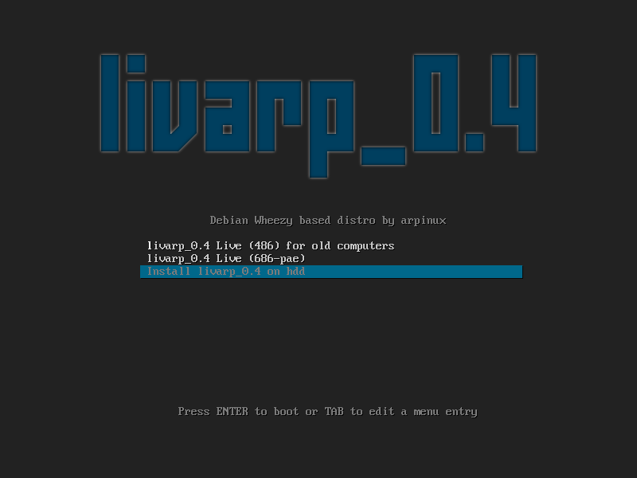
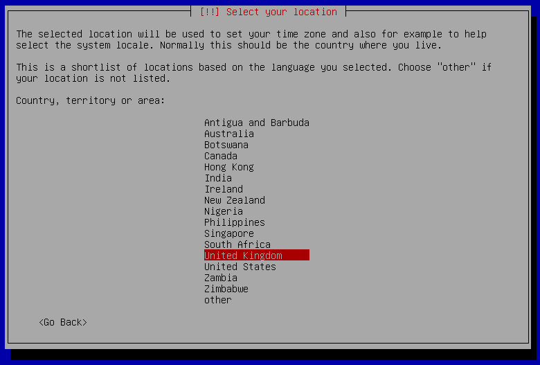
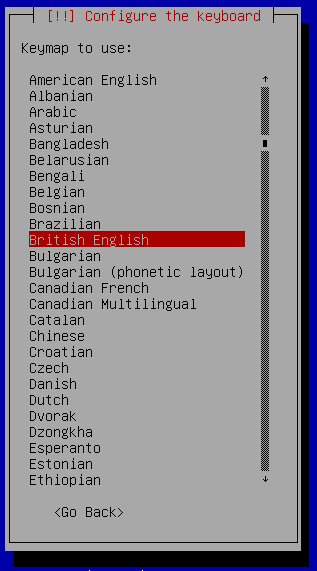
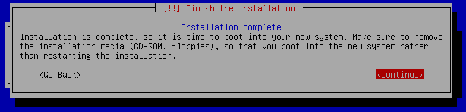
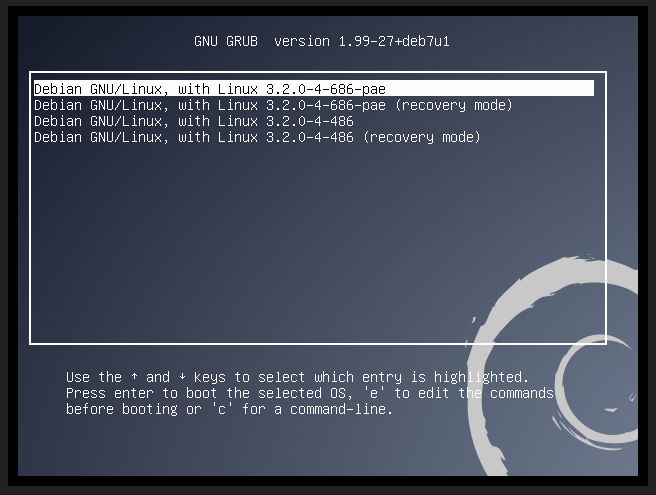
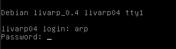
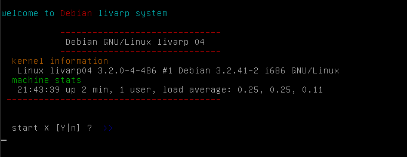
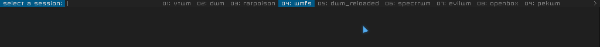
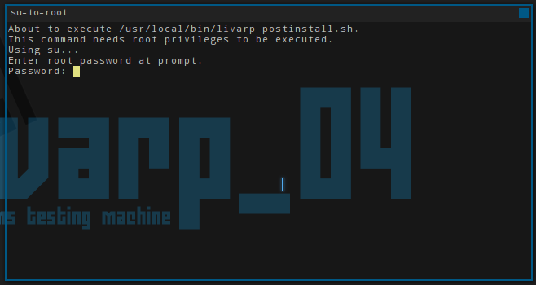
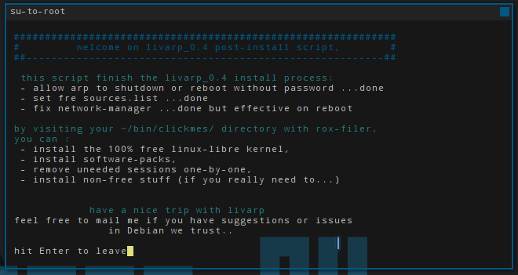

lang fr|gb

installation
l'installation du livarp dure entre 7 et 15 minutes. une connexion internet active est préférable mais pas obligatoire.
l'installateur est disponible depuis le menu syslinux de départ, descendre dans le menu et choisir Install puis laissez vous guider.

l'installeur est celui de Debian, pour les modes d'installation, veuillez consulter le wiki Debian.


(...)

une fois l'instalation terminée, votre ordinateur va redémarrer et lancer votre nouveau système. il ne vous reste plus qu'à choisir votre session et procéder à la post-installation (automatique).




post-installation
au premier boot, le script de post-installation se lance dans votre session graphique afin de terminer proprement l'installation. le mot de passe root vous sera demandé.

